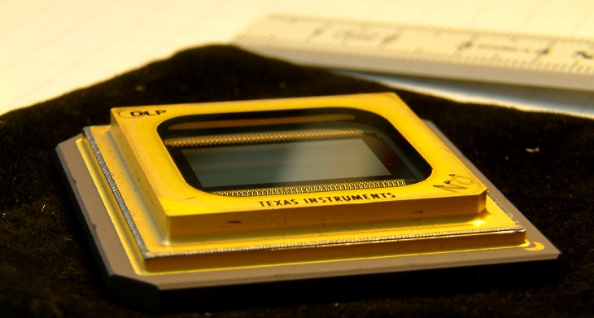

Technical Tuesday: Penny-Pinching Patterned Projection

Today is Technical Tuesday! A long delayed segment where we try to dive a little deeper into the actual costs involved in particular scientific techniques. We hope to show where you can save money, and what you might lose by saving that money. Today's topic is dynamically patterning light with Digitial Micromirror Devices.
With the advent of opto-genetics, spatial and temporal patterning of light is becoming more common in labs. One option to facilitate this sort of control is a Spatial Light Modulator which uses reflective liquid crystals to imprint a hologram on the incoming laser beam. This allows you to project patterns that are diffraction limited (woah precision). The downside is that this will run you ~$20K and requires a laser. If you want to DIY this kind of setup, you'll need to create a program to calculate the inverse Fourier transform of the image you want to project on the fly. It's interesting, but mostly for researchers that are working with holographic optical traps or really need that diffraction limited precision.
This brings us to our penny-pinching patterned projection proposal. A less complex option is a Digitial Micromirror Device (DMD). DMDs were invented in 1987 at Texas Instruments as a way to set up a projector--essentially it's a bunch of microscopic mirrors where each mirror acts as a pixel in your projected image. These things are also sometimes referred to as Digital Light Processors (DLPs) which is the trademarked name of the Texas Instrument product. You can do this in many colors by having different light sources or filters. They are found in LOTS of projectors these days--most movie theaters use them because they give a sharper and brighter image than a usual LCD projector. I recommend watching this series of youtube videos if you are interested in the details of operation.
Commercial: You can buy a commercial DMD set up from Andor (the Mosaic) or from Mightex (the Polygon400). Like the SLM, these will run you $10-20K for just the device and much more if you want it hooked up with your current microscope system. The benefit of these commercial systems is the support provided by the big companies--Andor and Nikon respectively. The Polygon400 with Nikon Elements and is nice and fairly intuitive to use. However, the standard system does not allow you to update the image projected during data acquisition and doesn't seem THAT much easier than the options listed below.
Semi-DIY: If you want a little more control for a little more work, you can buy a DLP from Texas Instruments or some other companies for $100-$1000. These you will have to align yourself but they come with (or you can buy) control board so that you can control the instrument through Python or other computer programs. This indeed works as people have used it in previous works. For both these and the commercially available options, you do not need collimated light so your LED or mercury lamp should work just fine.
More DIY: Finally you can literally hook a projector up to your microscope. Or build a microscope around a projector as is done by our friends in the Fraden lab in this paper.
{kind=link}
The major drawback to this system is that the power going into each pixel is super not uniform from a projector. In fact the one we have worked with has its power vary across the projection as a sigmoid. You can do things to attempt to correct this like change on-off time for each pixel, but it will be a struggle to get even illumination.
Thanks a lot to Tyler Ross and Ian Hunter for most of the information in this post. And if you have thoughts, suggestions or corrections--please let us know.